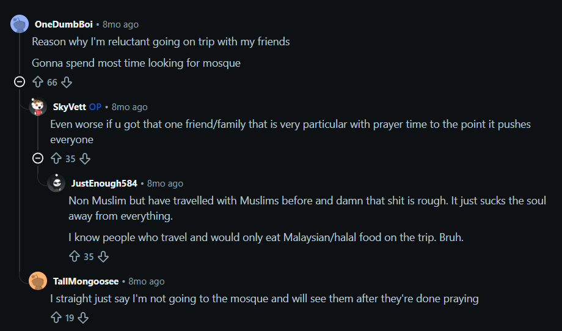
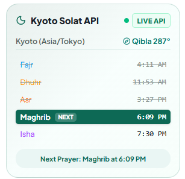
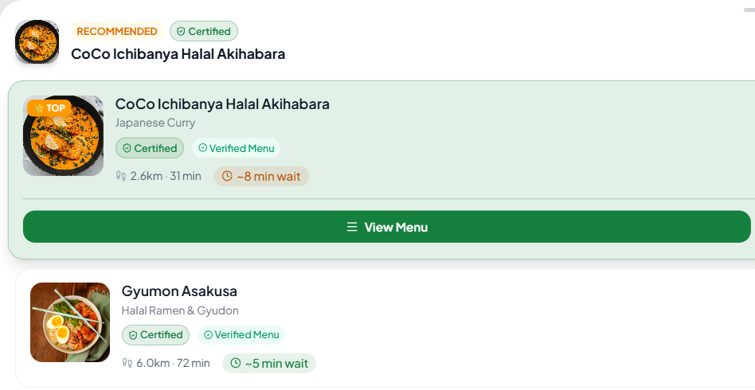
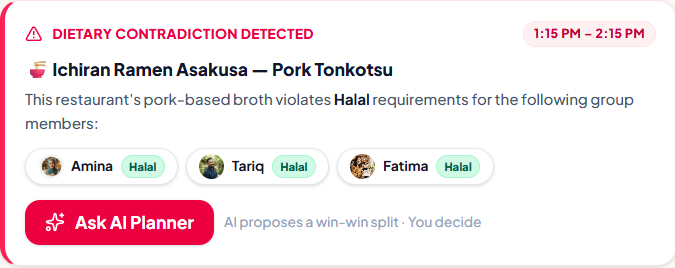

🧭
AI Travel Copilot - Built for Muslims
Safar
The Muslim Travel OS
AI Itinerary Planner for Muslim Travelers & Mixed-Faith Groups
CodeNection Hackathon 2026
· Team Ds Gang · Chong Pohyi · Teoh Xi Xian · Tan Wei Feng
🕌 Prayer-Anchored
✅ Halal Verified
👥 Mixed-Group AI
📄 Document Vault
🤖 Gemini AI
Who We Serve -- The Muslim Traveler
A $230 Billion Market. Zero Native OS.
1.8B
Muslims Worldwide
24% of global population
$230B
Muslim Travel Market (2024)
12% of global travel spend
160M
Muslim International Tourists 2023
12% of all global tourists
🕋
2.5M / year
Hajj pilgrims to Mecca
🤲
8M+ / year
Umrah travelers annually
📱
0 apps
Purpose-built Muslim travel OS
❌ Despite being 12% of all global tourists -- Muslim travelers have zero purpose-built AI planning tool
The Problem -- Real Traveler Proof
Muslim Travel Planning is Broken
Muslims juggle 5+ apps -- and still get it wrong. Mixed groups? Someone always sacrifices.
⏰
Schedule Blind Spots -- Prayer times ignored
Standard apps (Wanderlog, TripAdvisor, Google Maps) have zero awareness of Dhuhr, Asr, Fajr. Muslim travelers scramble to find a mosque mid-itinerary while the group waits with nothing to do.
🍽
Fragmented Halal Food Search -- 4 apps for 1 meal
Finding safe Halal food overseas means switching between Google Maps, TripAdvisor, Instagram, and HalalTrip with no live certification verification. 72% of Muslim travelers report difficulty finding Halal food abroad.
🤝
Inflexible Mixed-Group Conflicts -- Someone always loses
In mixed Muslim/Non-Muslim groups, "majority rules" forces painful sacrifices. Muslims miss prayers or non-Muslims sit idle for 45 mins. Real traveler comments on Reddit confirm: "Damn that shit is rough... I'm reluctant going on trip with friends."
72% struggle finding Halal food abroad · 91% rely on WhatsApp · 0 integrated solutions exist
"Travelled with Muslims before and damn that shit is rough... I straight just say I'm not going to the mosque and will see them after."

Market Gap -- No Existing Solution
How Muslims Currently Plan Trips
How They Review Places
▶ TikTok / Instagram Reels -- viral food & travel
📍 Google Maps star ratings (no Halal filter)
📝 Xiaohongshu (Red Note) for Asian destinations
❓ Manual cross-check with HalalTrip (static, outdated)
How They Plan Itineraries
💬 WhatsApp group chats (47+ unread messages)
📊 Excel / Google Sheets for scheduling
🗺 Wanderlog (no Halal / prayer awareness)
🤷 Manual prayer lookup in a separate app
| Tool |
Halal Radar |
Prayer Sync |
Group Planning |
AI Conflict Resolve |
Doc Vault |
| Safar (Ours) |
✅ Live |
✅ Auto |
✅ Multiplayer |
✅ AI Auto-Split |
✅ AI Cross-Check |
| Wanderlog |
✗ None |
✗ None |
✅ Yes |
✗ None |
⚠ Manual |
| HalalTrip |
⚠ Static DB |
✗ None |
✗ None |
✗ None |
✗ None |
| WhatsApp + Excel |
✗ None |
✗ None |
⚠ Manual |
✗ None |
✗ None |
There is no existing tool combining Halal verification + prayer anchoring + AI group conflict resolution in one platform
Problem to Solution -- 1:1 Map
Every Pain Point.
Directly Solved.
Direct 1-to-1 solutions that eliminate traveler exhaustion and companion
friction without asking anyone to sacrifice.
Problem 1 -- Prayer Blind Spots
Standard apps ignore Dhuhr, Asr, Fajr. Scrambling for mosques while companions wait 30-45 mins.
→
Solution -- Dynamic Prayer Anchoring
GPS auto-locks Prayer Blocks + nearest wudu spots. Non-Muslims auto-assigned nearby cafe break.
Problem 2 -- Fragmented Halal Search
Finding Halal food abroad takes 4+ apps with zero live certification check. 72% struggle finding safe meals.
→
Solution -- Live Geo-Fenced Halal Radar
Auto-drops Meal Blocks based on radius. 3-tier verified labels + walk times on one live map.
Problem 3 -- Inflexible Group Conflicts
"Majority rules" leaves Muslims compromising faith or non-Muslims sitting bored on sidewalks.
→
Solution -- AI Compromise & Auto-Split
Splits itinerary into parallel tracks without friction and re-syncs at synchronized regroup pin.
⚠️ The Unspoken Field Reality: Travel Exhaustion & Friction
Captured Struggle
Muslim Traveler: Anxious menu inspection in the rain, fear of hidden mirin/pork, racing against prayer windows.
Non-Muslim Companion: Sitting idly 45m with coffee on a street bench, feeling like vacation time is being wasted.
✨ Safar's Dual-Track Architecture eliminates both compromises permanently.
User Flow -- Muslim and Non-Muslim Paths
One App. Two Seamless Paths.
Muslim User Path
Join Group
Set: Strictly Halal + Prayer ON
↓
View Shared Itinerary
Prayer Blocks auto-locked
↓
Halal Meal Block
Certified Halal spots only
↓
Dhuhr Prayer
Nearest mosque + wudu facility
↓
Synchronized Regroup Pin
Both paths converge here
Shared Canvas
Admin Creates Trip
↓
Invite Link Sent
↓
Preference Setup Screen
↓
AI Generates Itinerary
↓
Conflict? AI Auto-Split
Non-Muslim User Path
Join Group
Set: No restrictions + Local food
↓
View Shared Itinerary
Sees all activities + prayer blocks
↓
Any Meal Options
Local restaurants nearby
↓
Auto-Suggested Cafe Break
While Muslim friends pray
↓
Synchronized Regroup Pin
Both paths converge here
The Solution -- Safar Operating System
The Solution: Safar Travel Workspace
One unified canvas replacing 5 disconnected tools -- prayer-anchored scheduling, live Halal radar, and AI compromise engine in a single screen.
Core Feature -- Prayer-First AI Engine
Context-Aware Prayer-First Planning
🕌
Dynamic Prayer-Anchored Timeline
Destination GPS auto-calculates prayer times and locks immovable "Prayer Blocks" with nearest wudu facilities. Simultaneously schedules cafe breaks for non-Muslim companions so the trip never stalls.
📍
Live Geo-Fenced Halal Radar
Drops recommendations based on live GPS location at mealtimes. Filters nearby restaurants with clear 3-tier labels (Certified Halal, Muslim-Owned, Pork-Free), walking distances, live wait times, and verified menus on one screen.
🤖
AI Compromise & Auto-Split Engine
When group votes create a dietary clash (e.g. Tonkotsu pork broth), AI immediately steps in to suggest middle-ground venues or automatically splits the itinerary into parallel paths with synchronized regroup pins.
🕌 Solat API (Kyoto)
Live API

📍 Live Geo-Fenced Halal Radar
Verified Directory

⚠️ Real-Time Conflict Warning & AI Auto-Split
Dietary Alert

Extra Features -- 3 Power Tools
Beyond the Basics. Every Edge Case Covered.
From viral social discovery to flight delay recovery -- built for real-world travel complexity.
🎬
Social Spot Extractor
AI Parser
Paste TikTok, Instagram, or RedNote reels. Safar automatically parses attractions and verified Halal dining pins directly into the map.
📍 Auto-extracts Tokyo Camii Mosque 🕌 & Sensō-ji Temple
🛡️
AI Document Vault
Gap Auditor
Drag & drop flight PDFs, hotel vouchers, and visas. Safar cross-audits 6-month passport validity and detects unbooked hotel nights.
⚠️ Gap Caught: Oct 25 check-out vs Oct 26 flight unbooked night
✈️
Live Transit & AI Reroute
Aviationstack API
Connected to real-time aviation and transit APIs. When flight delays occur, AI immediately preps a rescue itinerary and syncs express rail tickets.
🚨 Live Alert: MH70 +4h Delay Tracked & Skyliner Express Synced
Market Opportunity and Monetisation
A $230B Market. Zero Native Solution.
$230B
Muslim Travel Market (2024)
230M
Muslim Tourists by 2026
10.5M
Hajj + Umrah pilgrims per year
🇸🇦
Makkah and Madinah
2.5M Hajj pilgrims
100% Halal Verified
🇹🇷
Istanbul
4.2M Muslim visitors
Top Muslim destination
🇯🇵
Kyoto and Tokyo
+400% Muslim tourists
Fastest growing segment
🇲🇾
Malaysia Hub
29M Muslims -- Launch Market
Highest SE Asia outbound
Monetisation: Freemium SaaS + B2B API for travel agencies + Halal restaurant affiliate commissions
DEMO -- Live App Walkthrough (2 min)
Play Demo Video Now
This is a live, working app -- not a mockup.
1️⃣
Paste TikTok link -- Halal Radar fires
Real-time location extraction + 3-tier Halal labeling (Certified / Muslim-Owned / Pork-Free)
Social-to-Itinerary
2️⃣
Prayer blocks auto-insert + mosque detected
GPS prayer anchor -- Dhuhr locked at 12:48 -- nearest mosque + wudu facility pinned
Prayer Engine
3️⃣
Group conflict -- AI Auto-Split triggers
Muslim path (mosque) + Non-Muslim path (cafe) + synchronized regroup pin on map
AI Compromise
4️⃣
Document Vault catches accommodation gap
Hotel checkout Oct 25 -- Flight departs Oct 26 -- Sunday night unbooked -- Safar flags it
Doc Vault
🧭
Thank You
Safar
"Faith first. Group first. Travel better."
The travel OS for 1.8 billion Muslim travelers -- CodeNection Hackathon 2026
React 19 + TypeScript
Tailwind CSS v4
Google Gemini AI
Google Maps API
Firebase & BroadcastChannel
Aladhan Prayer API
jsPDF Dossier Export